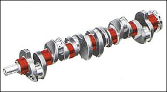
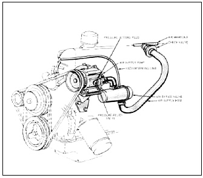

Part 1 - Page 2
Part 1 - Page 2 |

Figure 1 - Seven main bearing crankshaft |
Measuring Horsepower
In the beginning I drove the car 2000 miles to stabilize the engine which, by the way, came with the full California Thermactor smog equipment. After bringing the engine right up to factory specifications. I look a run on my electric chassis dynamometer and recorded 65 horsepower at the rear wheels. Weighed against the 120 advertised horsepower, this sounds as if some guy at the factory forgot to give us a full load, But such was not the case, and I would like to digress here for a moment to explain a few pertinent facts about horsepower measurement. There are three basic means of ascertaining horsepower gains. One,
of course, would be to remove the engine and run a full series of tests on a regular engine dynamometer stand. |
However, sometimes these figures cannot be correlated to the installed horsepower by the individual who reads the data, due to the fact that the installed horsepower is naturally somewhat less (because of exhaust inefficiencies. under hood breathing. and drag due to accessories). Another method is the practical one of trial and error by taking the car to the drag strip or by top speed runs, then evaluating the horsepower gains by comparing the performance gains.
The last choice is, of course, the chassis dynamometer. We felt this method was the best way to test the actual installed horsepower of the engine by measuring the output at the rear wheels, the unit we used was an electric dynamometer utilizing 18-inch rollers. Horsepower readings were obtained by a torque arm working through a potentiometer, the current being supplied by two synchronous generators driven by the rollers.
It is very difficult to come up with a 100 percent formula for converting chassis horsepower figures into actual crankshaft horsepower, so we will not concern ourselves with this matter here. We'll merely give the actual meter readings from the horsepower scale as well as the various rpm at which the readings were obtained. Thus, we will have a comparison of "before and after" readings as well as a general curve where one can readily see in what rpm range the changes were most effective. |
Enriching Carburetor Air/Fuel Ratio
Our first run on the dyno gave us a rear wheel rating of 65 horsepower at 4000 rpm. The air-fuel ratio meter read 14:1, from past experience; this had proven to be quite lean on our particular meter, so we immediately decided the first step would be to enrich the mixture slightly for a little better horsepower reading. The standard jet was found to be 62F, so we decided to enlarge the jet size to 63.5. Our second run on the dyno brought the air-fuel ratio to 13.4:1 and netted us a reading of 71 horsepower at the rear wheels (which proved to us we were headed in the right direction).
The next step was to ascertain if we had gone far enough, so we decided to drill the main jet out to a size .067. This produced a further increase to 75 horsepower at the rear wheels with an air-fuel ratio of 12.5:1. So as not to confuse the issue, I should state that my selection would be the .065 jet size for all-around usage where one would seek horsepower and good economy simultaneously. |
Ignition Timing
We then took a check on the spark lead and its effect on the horsepower we were getting at the rear wheels. An initial lead of 10° offered us the best all-around ignition setting, even though factory specifications called for 5°. |

Figure 2 - Thermactor Equipped 200cid Six |
Effects of Thermactor
By removing the air cleaner, we were able to come up with an additional one horsepower rating, which in this day and age is not bad. We were also curious about the Thermactor device, so we disconnected this unit and took another horsepower test. Lo and behold, we neither gained nor lost a significant amount of power. This should be a revelation to a1l of the people who have cars equipped with anti-smog devices -- they do not seriously affect the horsepower output of the car. On the other hand, I must confess that such units do not help the idle nor the low speed running. However, where they are required by law, I would certainly recommend you leave them as is, and be certain they are operating properly. |
|
|
|